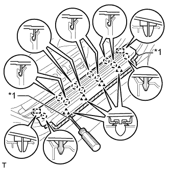
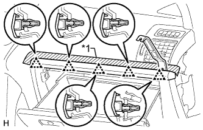
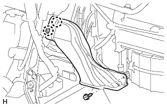
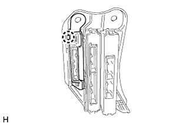

ЭБУ ПОМОЩИ ПРИ ДВИЖЕНИИ > СНЯТИЕ |
| 1. СНИМИТЕ ОПОРНУЮ НАКЛАДКУ ПРАВОЙ ДВЕРИ В СБОРЕ |
|  |
Наклейте защитную ленту вокруг опорной накладки двери.
С помощью отвертки освободите 4 фиксатора, 10 захватов и 2 направляющих и снимите опорную накладку двери.
| *1 | Защитная клейкая лента |
| 2. СНИМИТЕ БОКОВУЮ ОБЛИЦОВОЧНУЮ НАКЛАДКУ С ПРАВОЙ СТОРОНЫ КОЖУХА |
 |
Снимите фиксатор.
Освободите фиксатор и захват и снимите боковую облицовочную накладку кожуха.
| 3. СНИМИТЕ ПРАВУЮ БОКОВУЮ ПАНЕЛЬ ПРИБОРОВ |
 |
Наклейте защитную ленту вокруг боковой панели приборов.
| *1 | Защитная клейкая лента |
С помощью съемника молдингов отцепите 5 фиксаторов, захват и 3 направляющих и снимите боковую панель приборов.
| 4. СНИМИТЕ ДЕКОРАТИВНЫЙ ЭЛЕМЕНТ ПАНЕЛИ ПРИБОРОВ |
|  |
Наклейте защитную ленту вокруг декоративного элемента панели приборов.
| *1 | Защитная клейкая лента |
С помощью съемника молдингов освободите 5 фиксаторов и снимите декоративный элемент панели приборов.
| 5. СНИМИТЕ НИЖНЮЮ КРЫШКУ ПАНЕЛИ ПРИБОРОВ № 2 В СБОРЕ |
Выверните винт.
Освободите 3 фиксатора и 2 направляющих и снимите нижнюю крышку панели приборов № 2.

| *A | Для моделей с левосторонним рулевым управлением | *B | Для моделей с правосторонним рулевым управлением |
| 6. СНИМИТЕ ДВЕРЦУ ПЕРЧАТОЧНОГО ЯЩИКА В СБОРЕ |
 |
Выверните 2 болта <C> и 2 винта <A> или <B>.
| *1 | Болт |
| *2 | Винт |
Отцепите 5 фиксаторов и захват.
Отсоедините все разъемы и снимите дверцу перчаточного ящика.
| 7. СНИМИТЕ ВОЗДУХОВОД № 2 В СБОРЕ |
|  |
Выверните винт.
Освободите 2 захвата и снимите воздуховод № 2 в сборе.
| 8. СНИМИТЕ ПРАВЫЙ ИНТЕГРИРОВАННЫЙ БЛОК ЭБУ |
 |
Отсоедините разъемы.
Снимите зажим.
Отверните 2 гайки, выверните болт и снимите правый интегрированный блок ЭБУ.
| 9. СНИМИТЕ ЭБУ ПОМОЩИ ПРИ ДВИЖЕНИИ В СБОРЕ |
|  |
Освободите захват и снимите ЭБУ помощи при движении.